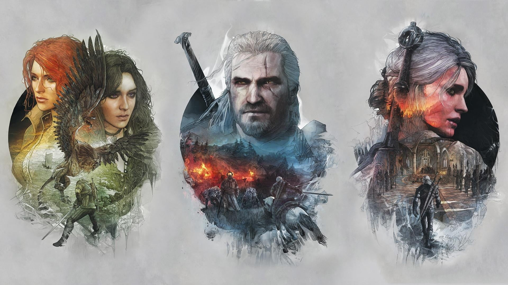
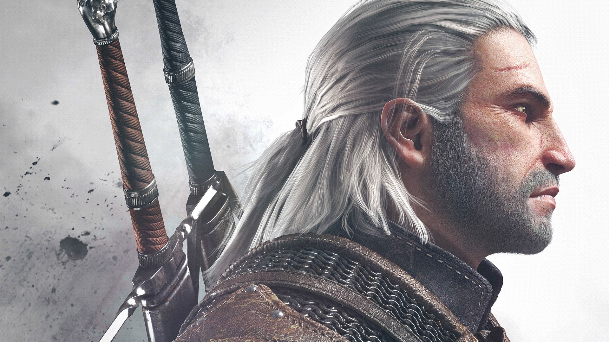
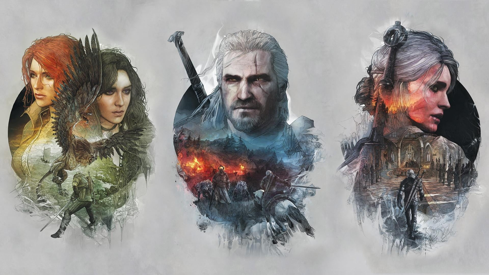
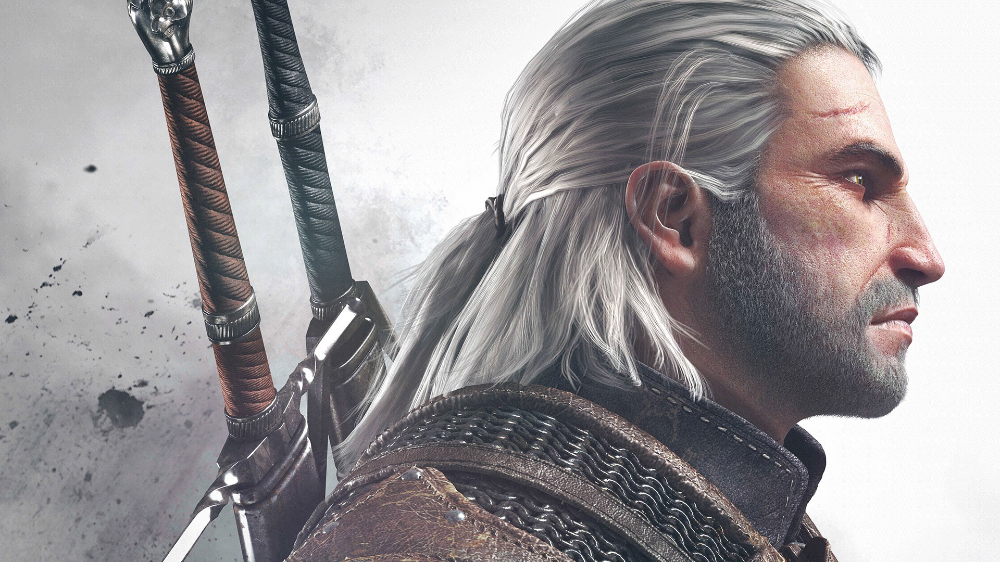

The Witcher 3: Wild Hunt
The witcher games are supposed to happen after the witcher books end.The games aren't canon to the books.
The book series came first, and the games are set after the, then, last book in the series.
Example Ciri in Witcher 3 comes out of nowhere if you hadn't read the books where she is a very big deal.
The Witcher 3: Wild Hunt is a 2015 action adventure role-playing game developed and published by CD Projekt. It is the sequel to the 2011 game The Witcher 2: Assassins of Kings and the third game in The Witcher video game series, played in an open world with a third-person perspective. The games follow the The Witcher series of fantasy novels written by Andrzej Sapkowski.
The game takes place in a fictional fantasy world based on Slavic mythology. Players control Geralt of Rivia, a monster slayer for hire known as a Witcher, and search for his adopted daughter, who is on the run from the otherworldly Wild Hunt. Players battle the game's many dangers with weapons and magic, interact with non-player characters, and complete quests to acquire experience points and gold, which are used to increase Geralt's abilities and purchase equipment. The game's story has three possible endings, determined by the player's choices at key points in the narrative.
Development began in 2011 and lasted for three and a half years. Central and Northern European cultures formed the basis of the game's world. The game was developed using the REDengine 3, which enabled CD Projekt to create a complex story without compromising its open world. The music was primarily composed by Marcin Przybyłowicz and performed by the Brandenburg State Orchestra.
The Witcher 3: Wild Hunt was released for PlayStation 4, Windows, and Xbox One in May 2015, with a Nintendo Switch version released in October 2019, and PlayStation 5 and Xbox Series X/S versions planned for release in December 2022. The game received critical acclaim, with praise for its gameplay, narrative, world design, combat, and visuals, although it received minor criticism due to technical issues. It received numerous game of the year awards and has been cited as one of the best video games ever made. Two expansions were also released to critical acclaim: Hearts of Stone and Blood and Wine. A Game of the Year edition was released in August 2016, with the base game, expansions and all downloadable content included. The game shipped over 40 million copies, making it one of the best-selling video games of all time.
CD Projekt Red has also confirmed that a 4th Witcher game is in development.

She helped advise King Demavend of Aedirn (though was never a formal royal advisor), a close friend of Triss Merigold, and the youngest member of the Council of Wizards within the Brotherhood of Sorcerers. After its fall, the Lodge of Sorceresses attempted to recruit her, but they didn't see eye to eye as the Lodge wanted to advance their own political agenda by using Ciri.
During the Trial of the Grasses, Geralt exhibited unusual tolerance for the mutagens that grant witchers their abilities. Accordingly, Geralt was subjected to further experimental mutagens which rendered his hair white and may have given him greater speed, strength, and stamina than his fellow witchers.
Despite his title, Geralt did not hail from the city of Rivia. After being left with the witchers by his mother, Visenna, he grew up in their keep of Kaer Morhen in the realm of Kaedwen. In the interest of appearing more trustworthy to potential clients, young witchers were encouraged to make up surnames for themselves by master Vesemir. As his first choice, Geralt chose "Geralt Roger Eric du Haute-Bellegarde", but this choice was dismissed by Vesemir as silly and pretentious, so "Geralt" was all that remained of his chosen name. "Of Rivia" was a more practical alternative and Geralt even went so far as to adopt a Rivian accent to appear more authentic. Later, Queen Meve of Lyria knighted him for his valor in the Battle for the Bridge on the Yaruga conferring on him the formal title "of Rivia", which amused him.[1] He, therefore, became a true knight.
After Geralt of Rivia helped lift Duny's curse, Duny asked what reward the witcher would like and Geralt invoked the Law of Surprise, as it turned out Pavetta was pregnant with Ciri, unbeknownst to Duny.

Geralt and his mentor Vesemir arrive at the town of White Orchard after receiving a letter from Geralt's long-lost lover Yennefer. After defeating a griffin for the local Nilfgaardian garrison, Geralt accompanies Yennefer to the city of Vizima, where they meet with Emperor Emhyr. Emhyr orders Geralt to find Ciri, who is Emhyr's biological, and Geralt's adopted daughter. Ciri is a Child of the Elder Blood, the last heir to an ancient Elven bloodline that grants her the power to manipulate time and space, and is being relentlessly stalked by the enigmatic Wild Hunt. Geralt learns of three places Ciri was recently seen: the war-ravaged swamp province of Velen, the free city-state of Novigrad, and the Skellige Isles.
In Velen, Geralt tracks Ciri to the fortress of the Bloody Baron, a warlord who recently took over the province. The Baron demands that Geralt find his missing wife and daughter in exchange for information about Ciri. Geralt learns that the Baron drove his own family away with his drunken rages; while his daughter fled to Oxenfurt, his wife Anna became a servant of the Crones, three malicious witches that watch over Velen. He also discovers that Ciri was briefly captured by the Crones, but escaped to the Baron's stronghold before continuing on to Novigrad.
At Novigrad, Geralt reunites with his former lover Triss Merigold, who has gone underground to escape persecution by the Church of the Eternal Fire. He learns that Ciri and his old friend Dandelion ran afoul of Novigrad's powerful crime bosses while seeking to break a curse related to a mysterious phylactery. With the help of Triss and several old acquaintances, Geralt rescues Dandelion, who tells him that Ciri teleported to Skellige to escape pursuit by guards.
Geralt sails to Skellige and reunites with Yennefer, who is investigating a magical explosion near where Ciri was last seen. They discover that Ciri visited the island of Lofoten, but when the Wild Hunt attacked again, fled in a boat with an unidentified elf. When the boat returned to shore, its only occupant was Uma, a deformed creature Geralt previously saw living with the Bloody Baron. Deducing that Uma was the victim of the curse Ciri tried to lift in Novigrad, Geralt collects Uma in Velen and takes him to the nearly abandoned witcher school at Kaer Morhen. Working with Yennefer and his fellow witchers, Geralt breaks the curse and restores Uma's true identity: Avallac'h, Ciri's teacher and the elf seen with her on her travels. Avallac'h tells Geralt that he placed Ciri in an enchanted sleep on the Isle of Mists to keep her temporarily safe from the Wild Hunt.

Geralt finds Ciri on the Isle of Mists and learns from her that Eredin, the leader of the Wild Hunt, wants her Elder Blood powers to save his homeworld from a catastrophe known as the White Frost. They return to Kaer Morhen and fortify it against the inevitable arrival of the Hunt. In the battle that ensues, Vesemir is killed, causing Ciri to unleash her uncontrolled power and temporarily send the Hunt into retreat.
Realizing that the Hunt will never stop, Ciri and Geralt decide to fight Eredin at a time and place of their choosing. While Triss and Yennefer reform the Lodge of Sorceresses to aid in the fight, Geralt recovers the Sunstone, an artifact that can communicate between worlds. Using the Sunstone, Avallac'h lures Eredin to Skellige, where Geralt defeats him in combat. As he dies, Eredin tells Geralt that Avallac'h has betrayed him, and plans to use Ciri's power for his own ends.
As the White Frost begins to encroach on the Continent, Geralt and Yennefer pursue Avallac'h, but find Ciri alive and well. She tells Geralt that Avallac'h is not a traitor, and has only ever intended to fight the White Frost. Thinking back on her relationship with Geralt, Ciri finds the strength to stop the cataclysm; if Geralt patronized and protected her throughout the game, she dies in the attempt, but if he guided her to mature and make her own choices, she survives.
The player's choices can lead to several different endings. If Ciri survives after defeating the White Frost and Geralt took her to meet her father, she will become the Empress of Nilfgaard. If Ciri survives but did not meet the emperor, Geralt helps her fake her death, and she becomes a witcher. If Ciri is killed in her confrontation with the White Frost, the story ends with Geralt retrieving her medallion from the last remaining Crone. The player's choices also determine whether Geralt ends up in a romantic relationship with Yennefer, Triss, or neither, and how much of the North is ultimately conquered by Nilfgaard.
The Witcher 3: Wild Hunt is a 2015 action adventure role-playing game developed and published by CD Projekt. It is the sequel to the 2011 game The Witcher 2: Assassins of Kings and the third game in The Witcher video game series, played in an open world with a third-person perspective. The games follow the The Witcher series of fantasy novels written by Andrzej Sapkowski.
The game takes place in a fictional fantasy world based on Slavic mythology. Players control Geralt of Rivia, a monster slayer for hire known as a Witcher, and search for his adopted daughter, who is on the run from the otherworldly Wild Hunt. Players battle the game's many dangers with weapons and magic, interact with non-player characters, and complete quests to acquire experience points and gold, which are used to increase Geralt's abilities and purchase equipment. The game's story has three possible endings, determined by the player's choices at key points in the narrative.
Development began in 2011 and lasted for three and a half years. Central and Northern European cultures formed the basis of the game's world. The game was developed using the REDengine 3, which enabled CD Projekt to create a complex story without compromising its open world. The music was primarily composed by Marcin Przybyłowicz and performed by the Brandenburg State Orchestra.
The Witcher 3: Wild Hunt was released for PlayStation 4, Windows, and Xbox One in May 2015, with a Nintendo Switch version released in October 2019, and PlayStation 5 and Xbox Series X/S versions planned for release in December 2022. The game received critical acclaim, with praise for its gameplay, narrative, world design, combat, and visuals, although it received minor criticism due to technical issues. It received numerous game of the year awards and has been cited as one of the best video games ever made. Two expansions were also released to critical acclaim: Hearts of Stone and Blood and Wine. A Game of the Year edition was released in August 2016, with the base game, expansions and all downloadable content included. The game shipped over 40 million copies, making it one of the best-selling video games of all time.
CD Projekt Red has also confirmed that a 4th Witcher game is in development.

About Yennefer
Yennefer of Vengerberg, born on Belleteyn in 1173, was a sorceress who lived in Vengerberg, the capital city of Aedirn. She was Geralt of Rivia's true love and a mother figure to Ciri, whom she viewed like a daughter to the point that she did everything she could to rescue the girl and keep her from harm.She helped advise King Demavend of Aedirn (though was never a formal royal advisor), a close friend of Triss Merigold, and the youngest member of the Council of Wizards within the Brotherhood of Sorcerers. After its fall, the Lodge of Sorceresses attempted to recruit her, but they didn't see eye to eye as the Lodge wanted to advance their own political agenda by using Ciri.
About Geralt
Geralt of Rivia was a legendary witcher of the School of the Wolf active throughout the 13th century. He loved the sorceress Yennefer, considered the love of his life despite their tumultuous relationship, and became Ciri's adoptive father.During the Trial of the Grasses, Geralt exhibited unusual tolerance for the mutagens that grant witchers their abilities. Accordingly, Geralt was subjected to further experimental mutagens which rendered his hair white and may have given him greater speed, strength, and stamina than his fellow witchers.
Despite his title, Geralt did not hail from the city of Rivia. After being left with the witchers by his mother, Visenna, he grew up in their keep of Kaer Morhen in the realm of Kaedwen. In the interest of appearing more trustworthy to potential clients, young witchers were encouraged to make up surnames for themselves by master Vesemir. As his first choice, Geralt chose "Geralt Roger Eric du Haute-Bellegarde", but this choice was dismissed by Vesemir as silly and pretentious, so "Geralt" was all that remained of his chosen name. "Of Rivia" was a more practical alternative and Geralt even went so far as to adopt a Rivian accent to appear more authentic. Later, Queen Meve of Lyria knighted him for his valor in the Battle for the Bridge on the Yaruga conferring on him the formal title "of Rivia", which amused him.[1] He, therefore, became a true knight.
About Ciri
Cirilla Fiona Elen Riannon who is also known as Ciri, was born in 1252 or 1253, and most likely during the Belleteyn holiday. She was the sole princess of Cintra, the daughter of Pavetta and Emhyr var Emreis (who was using the alias "Duny" at the time) as well as Queen Calanthe's granddaughter.After Geralt of Rivia helped lift Duny's curse, Duny asked what reward the witcher would like and Geralt invoked the Law of Surprise, as it turned out Pavetta was pregnant with Ciri, unbeknownst to Duny.

The story of witcher 3
Geralt and his mentor Vesemir arrive at the town of White Orchard after receiving a letter from Geralt's long-lost lover Yennefer. After defeating a griffin for the local Nilfgaardian garrison, Geralt accompanies Yennefer to the city of Vizima, where they meet with Emperor Emhyr. Emhyr orders Geralt to find Ciri, who is Emhyr's biological, and Geralt's adopted daughter. Ciri is a Child of the Elder Blood, the last heir to an ancient Elven bloodline that grants her the power to manipulate time and space, and is being relentlessly stalked by the enigmatic Wild Hunt. Geralt learns of three places Ciri was recently seen: the war-ravaged swamp province of Velen, the free city-state of Novigrad, and the Skellige Isles.
In Velen, Geralt tracks Ciri to the fortress of the Bloody Baron, a warlord who recently took over the province. The Baron demands that Geralt find his missing wife and daughter in exchange for information about Ciri. Geralt learns that the Baron drove his own family away with his drunken rages; while his daughter fled to Oxenfurt, his wife Anna became a servant of the Crones, three malicious witches that watch over Velen. He also discovers that Ciri was briefly captured by the Crones, but escaped to the Baron's stronghold before continuing on to Novigrad.
At Novigrad, Geralt reunites with his former lover Triss Merigold, who has gone underground to escape persecution by the Church of the Eternal Fire. He learns that Ciri and his old friend Dandelion ran afoul of Novigrad's powerful crime bosses while seeking to break a curse related to a mysterious phylactery. With the help of Triss and several old acquaintances, Geralt rescues Dandelion, who tells him that Ciri teleported to Skellige to escape pursuit by guards.
Geralt sails to Skellige and reunites with Yennefer, who is investigating a magical explosion near where Ciri was last seen. They discover that Ciri visited the island of Lofoten, but when the Wild Hunt attacked again, fled in a boat with an unidentified elf. When the boat returned to shore, its only occupant was Uma, a deformed creature Geralt previously saw living with the Bloody Baron. Deducing that Uma was the victim of the curse Ciri tried to lift in Novigrad, Geralt collects Uma in Velen and takes him to the nearly abandoned witcher school at Kaer Morhen. Working with Yennefer and his fellow witchers, Geralt breaks the curse and restores Uma's true identity: Avallac'h, Ciri's teacher and the elf seen with her on her travels. Avallac'h tells Geralt that he placed Ciri in an enchanted sleep on the Isle of Mists to keep her temporarily safe from the Wild Hunt.
Geralt finds Ciri on the Isle of Mists and learns from her that Eredin, the leader of the Wild Hunt, wants her Elder Blood powers to save his homeworld from a catastrophe known as the White Frost. They return to Kaer Morhen and fortify it against the inevitable arrival of the Hunt. In the battle that ensues, Vesemir is killed, causing Ciri to unleash her uncontrolled power and temporarily send the Hunt into retreat.
Realizing that the Hunt will never stop, Ciri and Geralt decide to fight Eredin at a time and place of their choosing. While Triss and Yennefer reform the Lodge of Sorceresses to aid in the fight, Geralt recovers the Sunstone, an artifact that can communicate between worlds. Using the Sunstone, Avallac'h lures Eredin to Skellige, where Geralt defeats him in combat. As he dies, Eredin tells Geralt that Avallac'h has betrayed him, and plans to use Ciri's power for his own ends.
As the White Frost begins to encroach on the Continent, Geralt and Yennefer pursue Avallac'h, but find Ciri alive and well. She tells Geralt that Avallac'h is not a traitor, and has only ever intended to fight the White Frost. Thinking back on her relationship with Geralt, Ciri finds the strength to stop the cataclysm; if Geralt patronized and protected her throughout the game, she dies in the attempt, but if he guided her to mature and make her own choices, she survives.
The player's choices can lead to several different endings. If Ciri survives after defeating the White Frost and Geralt took her to meet her father, she will become the Empress of Nilfgaard. If Ciri survives but did not meet the emperor, Geralt helps her fake her death, and she becomes a witcher. If Ciri is killed in her confrontation with the White Frost, the story ends with Geralt retrieving her medallion from the last remaining Crone. The player's choices also determine whether Geralt ends up in a romantic relationship with Yennefer, Triss, or neither, and how much of the North is ultimately conquered by Nilfgaard.
Here is the trailer of Witcher 3 Wild Hunt Next-Gen update.